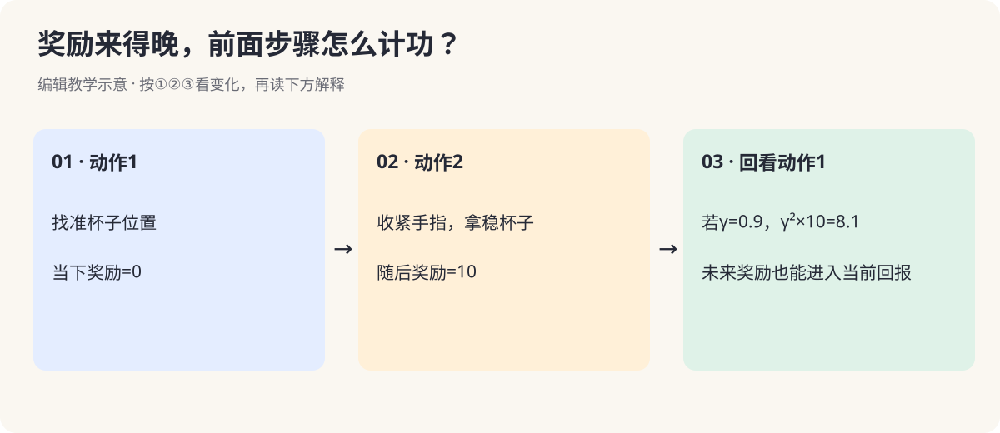
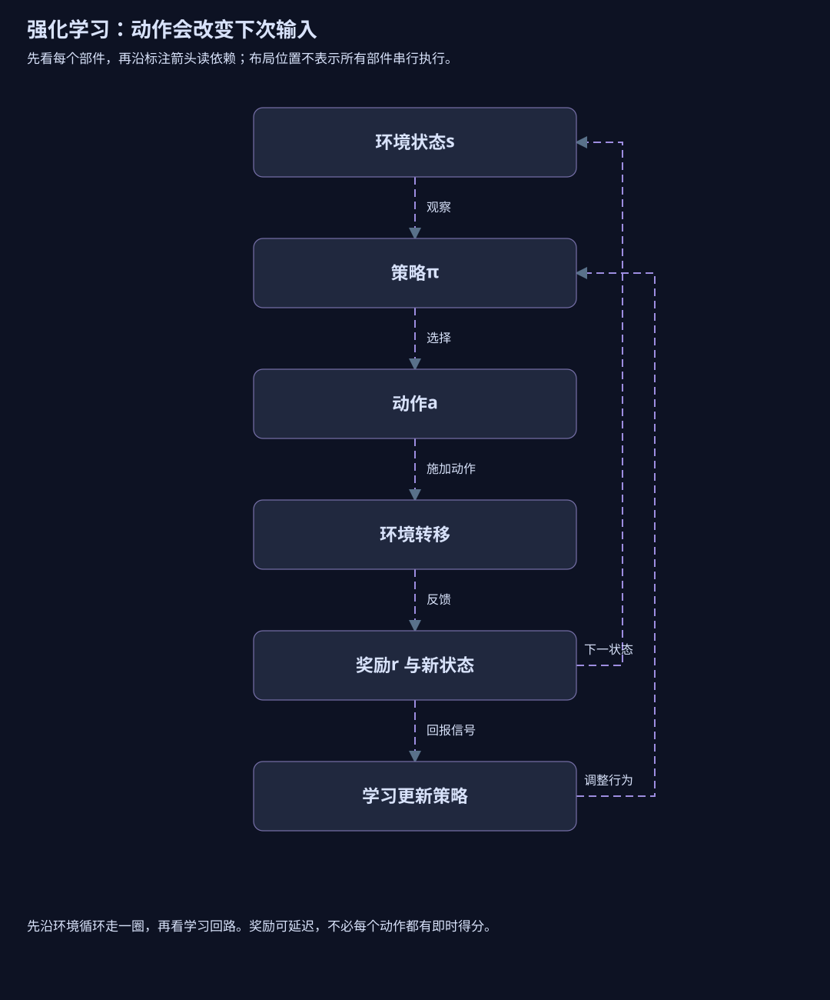

第9章 · 强化学习与信用分配
本章开篇生活情境与衔接为编辑教学改写，借鉴原视频从经历引出概念的讲解方法，不是作者原话；原视频线索与论文见下方对应段落。
先看一件具体的事
努力很久才有结果，模型怎么知道哪一步有用？

奖励来得晚，前面步骤怎么计功？ · 点击可放大先看这个场景
机器人看见桌上的杯子，说“这是杯子”，还不等于能把它拿起来。它要选择手往哪走、何时收紧、力度多大。动作会改变眼前的世界，下一次看到的状态也跟着变了。到了这里，学习的问题从“猜答案”变成了“怎么行动”。
问题出在哪里
强化学习把这个循环拆成状态、动作、奖励和下一状态。奖励不一定马上来：机器人可能先移动几次，最后才知道杯子拿稳没有。所以它评估一个动作时，不只看眼前得了多少分，还要看这个动作把自己带向了怎样的未来。
模型怎样处理
难点来了。如果最后成功了，该把功劳记给哪一步？是靠近时找对了位置，还是最后一下握得稳？这就是信用分配。折扣因子控制未来奖励在当前计算里占多少；辅助奖励可以让某些中间进展更容易被看见，但设计不好，也会让模型专门刷中间分。
再看一个变化
再换一个场景：机器人不能继续试，只能看过去留下的操作记录。没试过的动作，它可能也给出很高的价值，可这个高分没有新实验验证。离线强化学习要处理的，就是这种固定数据下的外推风险。CQL等方法尝试让缺少数据支持的动作估值更保守。
放回完整流程
最后，策略好不等于每次结果都好。掷骰子的棋类游戏里，一步棋可能长期看更划算，这局却恰好碰上坏运气。反过来，一次侥幸赢了也不能证明走法正确。我们需要比较期望回报、足够多的结果和策略的条件，而不能用单次输赢倒推一切。
回到开头
原视频把这些概念接到付出、反馈和期待上。这里借它记住三个问题就够了：奖励到底在奖励什么？延迟的结果怎样分到过去的动作？没有新证据的高估值靠什么站住？人际关系不是一个可以控制对方的强化学习实验，下面仍以清楚的动作与奖励来计算。
这一章怎么读先带着上面的问题往下看。每个概念先用白话接上情境，再给计算；遇到公式可以先看旁边的例子。动手实验和答案直接展开，论文留在相应概念后，想追根究底时再点开。
先动手试一试 → 9.1 带着问题进入模型
从单次预测走向多步动作之后，要评价的是一段过程的回报。先认识循环，再看延迟奖励和旧数据给它带来的困难。
先沿箭头看懂：强化学习：动作会改变下次输入

先沿环境循环走一圈，再看学习回路。奖励可延迟，不必每个动作都有即时得分。9.2 强化学习与LLM对齐
先看机器人这一步做完之后，世界怎样改变。只识别杯子不够，动作的价值还包含接下来能否顺利拿稳它。下面把即时奖励和未来奖励分开，再加回同一个回报里。
强化学习优化策略在环境中的期望回报。放到语言生成中，策略是生成token的概率规则，奖励可以来自反馈模型。
把刚才的直觉一步步算出来
把语言模型视为策略πθ：给定上下文，按概率生成token。一个完整回答可得到奖励，训练再调整生成这些token的概率。奖励可以由任务规则、人的评分或学习得到的奖励模型提供，机制并不相同。
经典RLHF先用示范训练SFT模型，再以人类偏好对训练奖励模型，最后在一定约束下优化策略。约束项可减少模型为了高奖励过度偏离参考策略，但不自动保证事实正确。
SFT在模仿示范；奖励模型在拟合偏好；策略优化在提高期望目标。三个模型/目标有不同的数据与失败方式。DPO将偏好学习写成直接优化目标，是相关但不同的方法。
换你试一次：先猜，再算
一策略以0.8概率得2分、0.2概率得−3分，期望回报是多少？一次拿到−3是否证明期望计算错误？
参考答案与计算结果
期望0.8×2+0.2×(−3)=1；单次低回报不反驳正确的分布期望，但长期分布若与假设不符需重估。
这个类比帮到哪里，停在哪里
人生关系没有天然固定的奖励函数；单次结果不能代表长期期望，但也不能据此认定任何既有策略都合理。
关联视频 · 已取得完整音轨并完成本机自动转写；本节综合转写与页面摘要改写，术语和个别片段尚未逐秒校对。
9.3 信用分配与奖励塑形
最后拿稳杯子，前面找准位置的动作也可能有功劳。下面看延迟回报怎样向前传；辅助奖励能让中间进展更明显，也可能让模型只顾刷过程分。
延迟奖励只在最终结果出现，训练需要判断之前哪些动作有贡献。奖励塑形在中间状态增加辅助信号，可能让学习更快，也可能改变模型追求的目标。
把刚才的直觉一步步算出来
延迟奖励只在最终结果出现，训练需要判断之前哪些动作有贡献。奖励塑形在中间状态增加辅助信号，可能让学习更快，也可能改变模型追求的目标。
一种有理论条件的办法是基于势函数的塑形F(s,a,s′)=γΦ(s′)−Φ(s)；在相应MDP假设下可保持最优策略结构。随意给中间动作加分没有这个保证。
视频提到基于势函数的奖励塑形研究。其政策不变性结论依赖MDP、折扣、终止处理等条件；不能不加条件地说任何非势函数奖励都一定失败。人际吸引不是已知状态、奖励与转移函数的受控MDP，消费故事不能直接用策略梯度当因果证明。
换你试一次：先猜，再算
两步任务最终奖励10，γ=0.9，从第一步看最终奖励折现为多少？若每多说一句话都奖励1，会有什么捷径？
参考答案与计算结果
两次转移后为0.9²×10=8.1；按句数奖励可能鼓励冗长，而非完成任务。时间步定义要与计算保持一致。
这个类比帮到哪里，停在哪里
“关系中的高消费”等叙事不能用奖励塑形直接证明，也不应变成操控关系的操作建议。
关联视频 · 已取得完整音轨并完成本机自动转写；本节综合转写与页面摘要改写，术语和个别片段尚未逐秒校对。
9.4 离线强化学习与CQL
现在关掉继续试验的机会，只留一份旧日志。某个动作被估得很高，日志里却没有可靠支持，怎么办？下面的保守估值正是围绕这种风险设计，而不是让所有动作都低分。
离线RL只使用固定数据集，不能随时向环境尝试新动作。策略若偏向数据没覆盖的动作，其价值估计可能失去约束。Q学习的自举更新又可能把高估反复传递。
把刚才的直觉一步步算出来
离线RL只使用固定数据集，不能随时向环境尝试新动作。策略若偏向数据没覆盖的动作，其价值估计可能失去约束。Q学习的自举更新又可能把高估反复传递。
CQL在目标中加入保守性约束，降低某些数据外行动价值被虚高估计的风险。其理论结论依赖设定和条件，不等于任何离线数据都能学出好策略。
视频的早期对照实验对应2019年ICML离线强化学习工作，CQL是2020年另一项后续研究。两者应分开引用，不能把固定数据引发外推误差的实验全部归到CQL论文。Bellman目标r+γmax_aQ(s′,a)中的max可能偏爱被高估的动作，但不同离线算法的处理方式并不相同。
换你试一次：先猜，再算
已观测动作A平均回报2；未观测动作B被网络估计为10。贪心会选哪个？仅凭Q(B)=10能证明B更好吗？
参考答案与计算结果
贪心选B，但B没有真实数据支持；需要覆盖、保守估计或可用环境中的验证。网络给出的数值不是新证据。
这个类比帮到哪里，停在哪里
“分手后仍爱”是作者叙事，不是CQL能验证的心理命题。
关联视频 · 已取得完整音轨并完成本机自动转写；本节综合转写与页面摘要改写，术语和个别片段尚未逐秒校对。
9.5 策略与结果：优化长期期望
一局棋输掉，不等于每一步都走错。下面把单次结果和长期期望分开，看看随机性存在时，为什么需要按策略面对的条件来评价它。
合理策略仍可能遇到不利结果；评价策略应区分预期回报与单次实现。环境、目标与信息条件改变时，也应重新评估策略。
把刚才的直觉一步步算出来
合理策略仍可能遇到不利结果；评价策略应区分预期回报与单次实现。环境、目标与信息条件改变时，也应重新评估策略。
在LLM主线之后阅读，用于练习区分概率、学习目标和行为结果。
从最优策略不保证每次最优结果切入，用带骰子随机性的棋类说明应比较长期期望。失败应拆成失误、做对的部分和不可控因素；后来获得新信息时可以改策略，不必为了证明过去而继续投入。
换你试一次：先猜，再算
策略有80%概率得2分、20%概率得−3分，期望是多少？
参考答案与计算结果
期望1分。单次−3分不能独自否定策略；要同时检查策略假设与环境变化。
这个类比帮到哪里，停在哪里
不能从单次失败证明策略错误，也不能从“有随机性”推出策略永远无需改变。
关联视频 · 已取得完整音轨并完成本机自动转写；本节综合转写与页面摘要改写，术语和个别片段尚未逐秒校对。
本章交互实验
想亲手复现，就运行这段小实验
本例是编辑编写的教学计算，不是作者实验的代码复刻。先把 common.py 与本章脚本下载到同一个目录，再执行 python3 09_reinforcement.py。只使用Python标准库。
gamma=.9
print('two-step discounted final reward:',gamma**2*10)
reward=1.; q_next=[2.,10.]
print('max-based Bellman target:',reward+gamma*max(q_next))
print('if unsupported action is excluded:',reward+gamma*q_next[0])
# A potential shaping sum telescopes under discounted accounting.
potential=[1.,2.,4.]
fs=[gamma*potential[i+1]-potential[i] for i in range(2)]
print('discounted shaping:',fs[0]+gamma*fs[1])
print('boundary term:',-potential[0]+gamma**2*potential[-1])
实际运行输出
two-step discounted final reward: 8.100000000000001
max-based Bellman target: 10.0
if unsupported action is excluded: 2.8
discounted shaping: 2.24
boundary term: 2.24
先不急着读完每一行代码。找到输入、这次改变的量和最后输出，按上面的例子预测一次，再运行核对。若结果和直觉不同，打印中间值，看看差异从哪一步开始。
回到开头，你能解释了吗？
最终成功后，为什么不能把功劳全给最后一个动作？
一次结果不好，能不能直接证明当时选的策略不好？
用自己的话讲给一个没读过这一章的人听。能把问题、过程和结果接起来，再看公式就会容易一些。